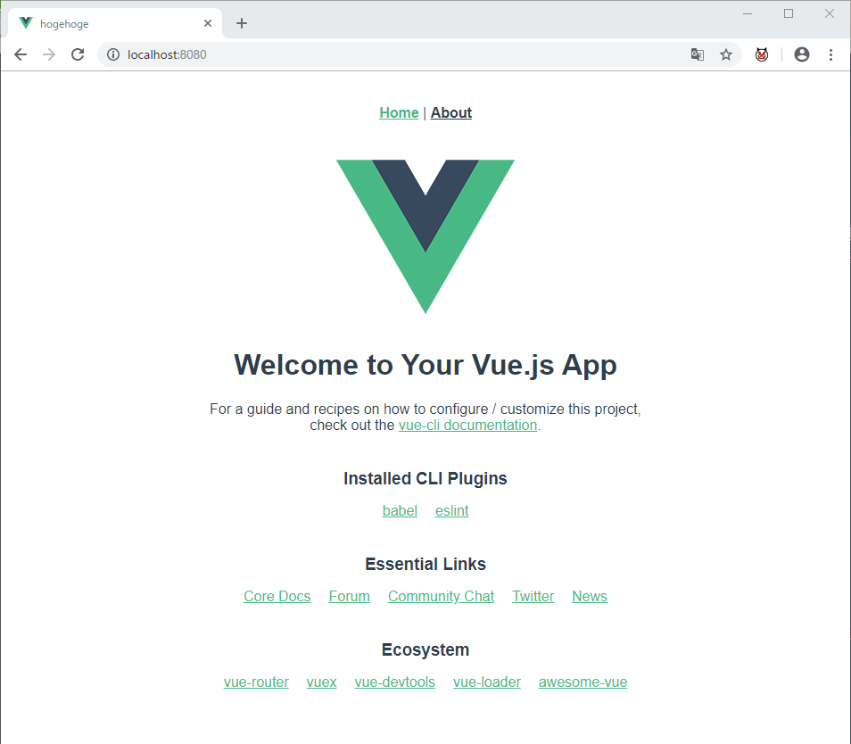
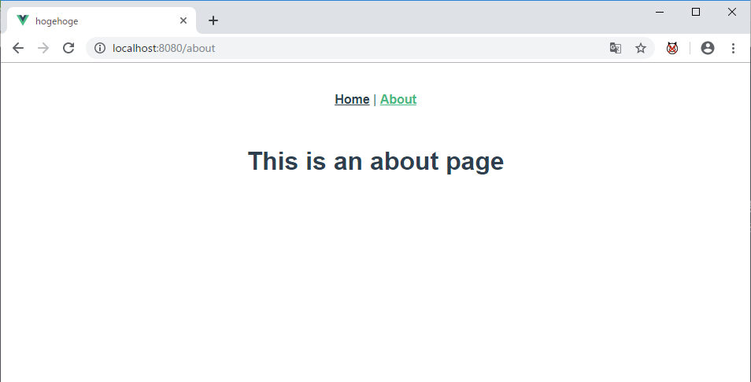
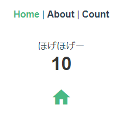
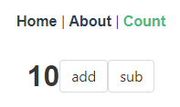
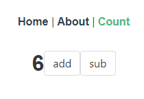
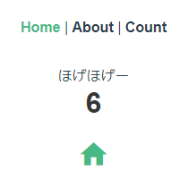
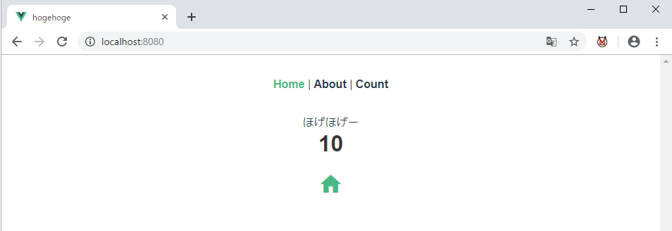
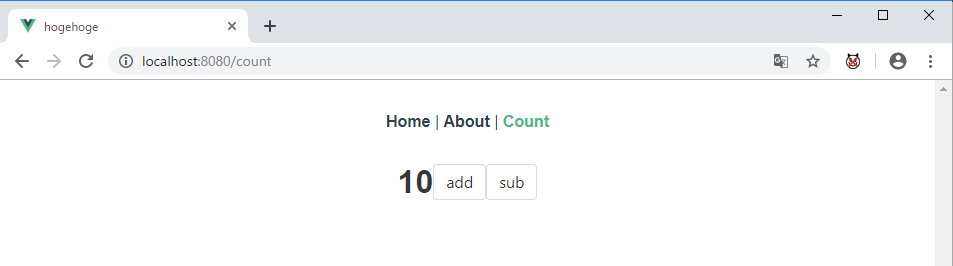
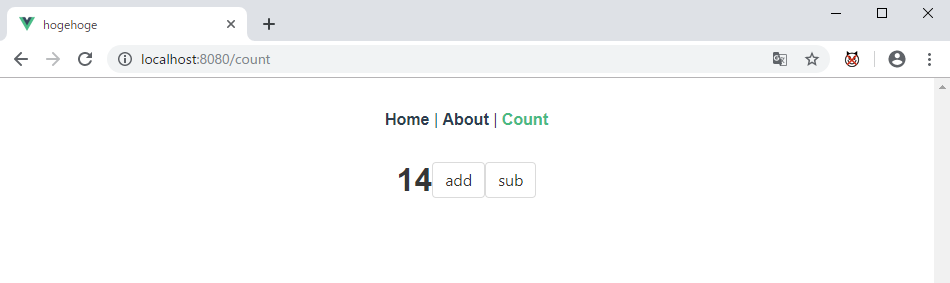
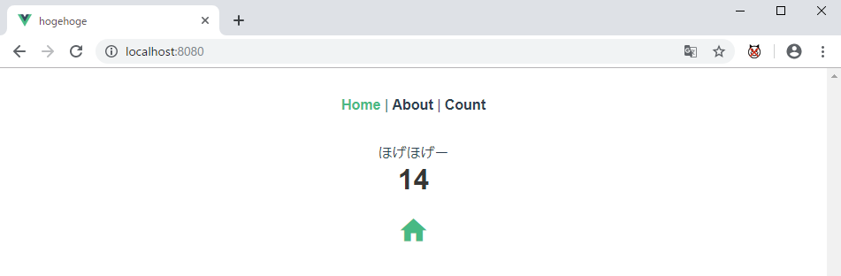

以前の記事ではVue CLIを使って簡単なWebアプリケーションを作ってみました。このとき、Vue CLIの設定はデフォルトを採用したのですが、デフォルトだと「Vuex」や「Vue Router」はOFFです。Vue.jsでなくともReactなどのJavaScriptのライブラリやフレームワークを用いた環境でSPAを作成する場合、状態管理とルーティングは避けて通れない機能です。いや、別に利用しなくてもいいんですが、たぶん避けて通ったほうが後々面倒なこと（コンポーネント間でデータバケツリレーしたり、ページ遷移する必要が出てきたり・・・）になります。
なので今回は「VuexとVue Routerを使用したSPAをざっくり作って、状態管理とルーティングに慣れておこうぜ」というのが趣旨です。基本的にはVuexのチュートリアルを参考にしています。
また、基本的にはVue.jsのオフィシャルドキュメントを見つつ、通称「猫本」と呼ばれる「基礎から学ぶVue.js」の記述に沿っています。相変わらず完全に読み切ってないのですが、サンプルコードが参照できるサイトもあってとても親切です。
$ vue --version
3.10.0
$ node --version
v10.15.3まずはVue CLIで枠を作ります。
vue create hogehoge・・・いい名前が思いつかなかった_(:3」∠)_
ここで注意が必要なのは、VuexとVue Routerを設定するのにはデフォルト設定だとダメということです。マニュアル設定します。
? Please pick a preset: Manually select features
? Check the features needed for your project: (Press <space> to select, <a> to toggle all, <i> to invert selection)
>(*) Babel
( ) TypeScript
( ) Progressive Web App (PWA) Support
( ) Router
( ) Vuex
( ) CSS Pre-processors
(*) Linter / Formatter
( ) Unit Testing
( ) E2E Testing このうち、RouterとVuexを選択しておきます。もし必要なら他の項目もついでに選択してエンターキーを押します。
ちなみに、Routerを選択したときに下記の質問が表示されます。
? Use history mode for router? (Requires proper server setup for index fallback in production) (Y/n)「Historyモードは使うかい？」と聞かれているわけですが、これには条件があります。その条件とはカッコ書きで「サーバー側の設定が必須だよ」と言っています。これはVue RouterのHistoryモードに関するページに記載があります。サーバー側の設定が不可能である、あるいはhashモードでも問題ない場合はNoを選択してください。ここではYesを選択しました。
Lintなどの設定はデフォルトのものを選択して環境設定を終わらせます。
Vue Routerには2つのモードがあります。
これはそれぞれ各ページのアドレスに違いが表れます。
たとえばあるSPAには、トップページの他にaboutというページがあるとします。この場合、hashとhistoryでアドレスが下記のように異なります。
hash
http://localhost:8080/#/abouthistory
http://localhost:8080/aboutこのように、Historyモードを使っているとアドレスバーに表示されるURLは、SPAであるにもかかわらず「普通」なURLです。つまりHistoryモードだとハッシュを取り除けるわけです。ただし、これはあくまで「普通っぽいURLが表示されているだけ」で、本来はシングルページのクライアントサイドアプリです。なので、サーバー側で適切なルーティング設定を施さないと、アドレスバーに直接http://localhost:8080/about/と入力してURLで直撃しようした場合404エラーになってしまいます。こんな場合はindex.htmlで受け付けるように、サーバーへ設定を施してやる必要があります。なお、サーバー環境により設定内容は異なるため、詳細はオフィシャルを参照してください。
処理が終わるとプロジェクトが生成されたはずなので、とりあえず下記のコマンドを実行します。
cd hogehoge
npm run serve表示されたアドレスへアクセスしてみます。

Homeの他に、ここではAboutというページが生成されています。アクセスしてみます。

ぱっと見は特段気になるようなことはありませんが、実はHomeからAboutへ遷移する際にメインの表示部分だけを再描画しています。見た目は別ページに遷移したように見えますが、実際はシングルページ上の一部分がころころと再描画されて変わっています。これこそまさにSPAの挙動です。
Vue CLIで生成されたプロジェクトは下記のような構成です。
hogehoge
│ .gitignore
│ babel.config.js
│ package-lock.json
│ package.json
│ README.md
│
├─public
│ favicon.ico
│ index.html
│
├─node_modules
│
└─src
│ App.vue
│ main.js
│ router.js
│ store.js
│
├─assets
│ logo.png
│
├─components
│ HelloWorld.vue
│
└─views
About.vue
Home.vueこの中で、node_modulesは依存するパッケージなんかがしこたま格納されているフォルダなので、内容は割愛します。
以前の記事でもVue CLIを利用しましたが、今回はVuexとVue Routerを利用しているのでプロジェクト構造も変化しています。特徴的なのはviewsフォルダでしょう。これは以前Vue CLIをデフォルト設定でcreateした場合のフォルダ構造に存在しなかったフォルダです。そして、その中に格納されているHome.vueとAbout.vueというファイル。もう名前からしてわかりますが、それぞれHomeの画面とAboutの画面に対応しています。
たとえばHome.vueはこんな内容です。HelloWorld.vueをインポートして、msgに文字列を設定しています。相変わらずこのメッセージがホームに表示されるのですが、前回と異なるのはこの処理をApp.vueでやっていないことです。
<template>
<div class="home">
<img alt="Vue logo" src="../assets/logo.png">
<HelloWorld msg="Welcome to Your Vue.js App"/>
</div>
</template>
<script>
// @ is an alias to /src
import HelloWorld from '@/components/HelloWorld.vue'
export default {
name: 'home',
components: {
HelloWorld
}
}
</script>そしてAbout.vueはこんな感じ。
<template>
<div class="about">
<h1>This is an about page</h1>
</div>
</template>逆にApp.vueはナビバーのメニューそれぞれにルーティング設定することだけで、機能らしい機能を保持していません。以前であればこのファイル内にはHelloWorld.vueのインポートなどが記述されていましたが、前述の通り今回はそういう機能がすべてHome.vueにて保持されています。
<template>
<div id="app">
<div id="nav">
<router-link to="/">Home</router-link> |
<router-link to="/about">About</router-link>
</div>
<router-view/>
</div>
</template>
<style>
#app {
font-family: 'Avenir', Helvetica, Arial, sans-serif;
-webkit-font-smoothing: antialiased;
-moz-osx-font-smoothing: grayscale;
text-align: center;
color: #2c3e50;
}
#nav {
padding: 30px;
}
#nav a {
font-weight: bold;
color: #2c3e50;
}
#nav a.router-link-exact-active {
color: #42b983;
}
</style>以上のとおり、各ページはそれぞれのvueファイルにて記述されていることがわかります。
VuexやVue Routerを導入した影響はjsファイルにもあり、ファイルrouter.jsとstore.jsが追加されています。が、とりあえずまずはmain.jsを見てみます。
import Vue from 'vue'
import App from './App.vue'
import router from './router'
import store from './store'
Vue.config.productionTip = false
new Vue({
router,
store,
render: h => h(App)
}).$mount('#app')
routerおよびstoreのインスタンスをインポートして、Vueインスタンスに設定しているのがわかります。これにより、別コンポーネントでも$store.hogeとすることでストア中のデータを参照できます。また、ルーティング設定を施すことで新しいコンポーネントを1つのページとして扱うことができます。
次はrouter.jsを見てみます。
import Vue from 'vue'
import Router from 'vue-router'
import Home from './views/Home.vue'
Vue.use(Router)
export default new Router({
mode: 'history',
base: process.env.BASE_URL,
routes: [
{
path: '/',
name: 'home',
component: Home
},
{
path: '/about',
name: 'about',
// route level code-splitting
// this generates a separate chunk (about.[hash].js) for this route
// which is lazy-loaded when the route is visited.
component: () => import(/* webpackChunkName: "about" */ './views/About.vue')
}
]
})
Home画面にはHome.vueが、About画面にはAbout.vueが紐づけられています。パスとコンポーネントがそれぞれ紐づけられて、ルーティング設定されていることがわかります。
次にstore.jsです。
import Vue from 'vue'
import Vuex from 'vuex'
Vue.use(Vuex)
export default new Vuex.Store({
state: {
},
mutations: {
},
actions: {
}
})
本来はVuexで一元管理するデータの設定ファイルなのですが、デフォルトでは何もありません。
ざっくりと構造を俯瞰したところで、内容をちょっと変えてみましょう。内容は、お馴染みかと思いますが簡単なカウンターアプリを実装することにします。カウントの値はVuexで管理して、カウントするためのページを今の資産に追加します。ファイルの名前はCount.vueとかにしますかね。
現在のファイル内容が気にならなければ、このステップのうちCount.vueの追加以外は飛ばしていいと思います。が、個人的に「自分で手を加えた」感を出すために、ホーム画面はいじっておきたかったので最初に内容を編集します。と言ってもすることは、今の内容を削除して任意の内容に書き換えるだけです。まずは取っ掛かりとしてBuefyを導入します。導入方法は以前の記事に書いてありますのでご参照ください。
書き換える対象のコンポーネントはApp.vueとHome.vue、HelloWorld.vueです。このうち、Home.vueとHelloWorld.vueにはホームの主要な表示項目がこれらのコンポーネントに記述されていますが、それをごっそり適当に書き換えます。まずはHelloWorld.vueです。
<template>
<div class="hello">
<h2>{{ msg }}</h2>
<a ref="https://idontwannawork.github.io/"><b-icon icon="home" size="is-medium"></b-icon></a>
</div>
</template>
<script>
export default {
name: 'HelloWorld',
props: {
msg: String
}
}
</script>
<!-- Add "scoped" attribute to limit CSS to this component only -->
<style scoped>
h3 {
margin: 40px 0 0;
}
ul {
list-style-type: none;
padding: 0;
}
li {
display: inline-block;
margin: 0 10px;
}
a {
color: #42b983;
}
</style>次にHome.vueです。
<template>
<div class="home">
<HelloWorld msg="ほげほげー"/>
</div>
</template>
<script>
// @ is an alias to /src
import HelloWorld from '@/components/HelloWorld.vue'
export default {
name: 'home',
components: {
HelloWorld
}
}
</script>最後にApp.vueです。新たに追加するカウント用ページのリンクを追加します。
<template>
<div id="app">
<div id="nav">
<router-link to="/">Home</router-link> |
<router-link to="/about">About</router-link> |
<router-link to="/count">Count</router-link>
</div>
<router-view/>
</div>
</template>
<style>
#app {
font-family: 'Avenir', Helvetica, Arial, sans-serif;
-webkit-font-smoothing: antialiased;
-moz-osx-font-smoothing: grayscale;
text-align: center;
color: #2c3e50;
}
#nav {
padding: 30px;
}
#nav a {
font-weight: bold;
color: #2c3e50;
}
#nav a.router-link-exact-active {
color: #42b983;
}
</style>ちなみに、ここでリンクを追加しただけではCount.vueの表示ができません。後述するrouter.jsの編集が必須だからです。
Count.vueに/countというURLでアクセスできるように、router.jsを編集します。
import Vue from 'vue'
import Router from 'vue-router'
import Home from './views/Home.vue'
Vue.use(Router)
export default new Router({
mode: 'history',
base: process.env.BASE_URL,
routes: [
{
path: '/',
name: 'home',
component: Home
},
{
path: '/about',
name: 'about',
// route level code-splitting
// this generates a separate chunk (about.[hash].js) for this route
// which is lazy-loaded when the route is visited.
component: () => import(/* webpackChunkName: "about" */ './views/About.vue')
},
{
path: '/count',
name: 'count',
component: () => import('./views/Count.vue')
}
]
})
これで「count」のリンクを押すとCount.vueが表示されるようになりました。
カウントしたデータを保持するため、store.jsを編集します。
import Vue from 'vue'
import Vuex from 'vuex'
Vue.use(Vuex)
export default new Vuex.Store({
state: {
counter: 10
},
mutations: {
increment(state){
state.counter++
},
decrement(state){
state.counter--
}
},
actions: {
increment: ({ commit }) => {
setTimeout(() => {
commit('decrement')
}, 3000);
}
}
})
Vuexでは単一ステートツリーを利用しています。通常アプリケーション1つにおいては、ストアは1つしか持ちません。この単一なストアにはアプリの状態がすべて含まれています。なので、あるデータについて現在の状態を参照したい時などに便利です。また、ストアにはステート（状態）、ミューテーション、アクションの3つを記述します。
何はともあれ、Vuexでストアを作ります。最低限必要なのは、ストアオブジェクトの初期状態とミューテーションです。なお、特段の必要がなければアクションに記述する必要はありませんが、ここではせっかくなので1つ機能を実装しています。
counterは初期値として10が格納されていますが、もちろんゼロでも問題ありません。なんとなくです。ここで定義されたステートは各コンポーネントから適切な方法を用いることで、コンポーネント間で値を授受しなくても値の参照および設定が可能です。
ミューテーションには加算するincrementと減算するdecrementを用意しました。これでカウンターとしての機能は実装できています。
アクションは減算を3秒待って行う機能を実装しています。見るとわかるのですがアクションは「状態を変更する（減算する）処理を実装している」のではなく、状態を変更する（減算する）ミューテーションをコミットしているだけです。あくまでも状態を変更するのはミューテーションであって、アクションではありません。また、3秒のインターバルを設けているように非同期処理が可能です。
store.jsに定義したステートは、各コンポーネントからアクセスが可能なことは前述の通りです。これがVuexの特徴であり、とくに「コンポーネントの数が多い」とか、「コンポーネントの親子関係が深いわりに値の受け渡しが多い」とかの場合に威力を発揮します。
逆に言えば今回のチュートリアルで見ているような「コンポーネントの数が少なく、親子関係も浅い」という小規模なケースではVuexを利用するメリットはあまりありません。場合によっては、コンポーネント間でprops経由のデータ授受を行ったほうが、コードの可読性が向上するケースもあるでしょう。なので、実装したい機能のコンポーネント構造が、将来的にどのくらい拡大するかを見極めておく必要があります。
とは言っても、「最初に見極めろなんて言われてたって無理だよ！」っていうのはもっともな話です。なので、いっそのこと「とりあえずプロトタイプでも何でもVuexを利用しちゃう」ってルールにするのも全然ありだと思います。仮に規模が拡大していけばVuexがその威力を発揮してくれるでしょうし、たまたま小規模で完結するなら可読性に気をつけてコーディングすればいいだけの話です。
まぁ、複数人で作業してると「定数なのにストアに書く」ようなメンバーが出てくるとも限らないので、ある程度の開発ルール作りは必要だと思います。が、それはまた別な話ですね。
viewsフォルダにCount.vueという名前でファイルを作成します。
<template>
<section>
<span class="title">{{$store.state.counter}}</span>
<b-button @click="increment">add</b-button>
<b-button @click="decrement">sub</b-button>
</section>
</template>
<script>
export default {
methods:{
increment(){
this.$store.commit("increment");
},
decrement(){
this.$store.commit("decrement");
}
}
}
</script>
<style scoped>
</style>さらっとここで$store.state.counterとか書いてますが、この1文でstore.jsのstate内に記述したデータcounterをアクセスしています。そして、store.jsのステートは他のコンポーネントでも参照が可能です。なので、HelloWorld.vueのtemplate部分を下記のように書き換えてみても、やっぱりちゃんと参照できます。Count.vueで加算あるいは減算すると、計算結果はステートに反映されますが、その状態はCount.vueを表示してもHelloWorld.vueを表示しても同じ値が表示されるはずです。
<template>
<div class="hello">
<h2>{{ msg }}</h2>
<p class="title">{{$store.state.counter}}</p>
<a href="https://idontwannawork.github.io/"><b-icon icon="home" size="is-medium"></b-icon></a>
</div>
</template>たとえばcounterの初期状態が「10」だとします。ホームでは「10」（初期状態）を表示しています。

カウント用ページでも「10」（初期状態）を表示しています。

ここで加算あるいは減算を行います。ここではcounterの値を「6」へ変更しました。

ホームでは最新のcounterの値を参照し「6」が表示されます。

「え、そんなん当たり前じゃん」と思われるかもしれません。しかし、これこそが「信頼できる唯一の情報源 (single source of truth)」なのです。今は作成した機能が小規模すぎてインパクトがあまりないですが、この「どのコンポーネントでもstore.jsのステートを参照すればいい」というのは、アプリケーションの規模が大きくなるほど威力を発揮します。
Vuexを使うとストアにゲッターを定義できます。これはステートのデータを参照するためのものです。「参照なら$store.state.hogeでできるじゃん」と言われそうですが、ゲッターはさらに多彩です。言及すると1記事ができちゃうくらいなのでここでは割愛します。
編集後のプロジェクトでnpm runしてみます。
npm run serveしばらく待って表示されたアドレスへアクセスしてみます。

カウント用ページはこんな感じ。

「add」は「sub」ボタンで値の編集も可能です。

編集済みのデータはHome側でも参照可能です。

Vuexのチュートリアルを参考にカウンターアプリを実装してみました。アプリと言うには機能が小規模過ぎますが、VuexとVue Routerを理解するのに良いサンプルだと思います。
VuexとVue Routerを実装し、今回は割愛してしまいましたがゲッターの機能なども駆使することで、SPAの開発が容易になります。慣れるには数を作ることだと思うので、また別なアプリでも実装してみようかなー（フラグ